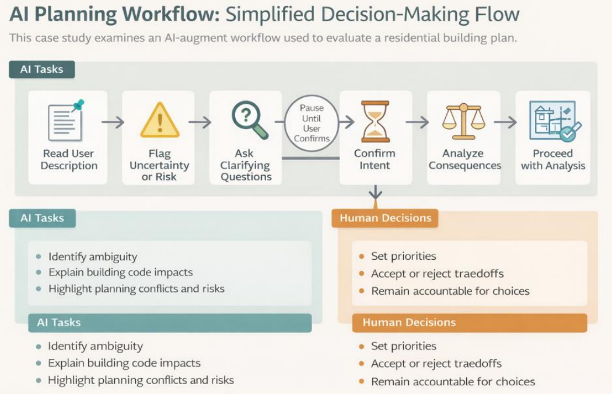
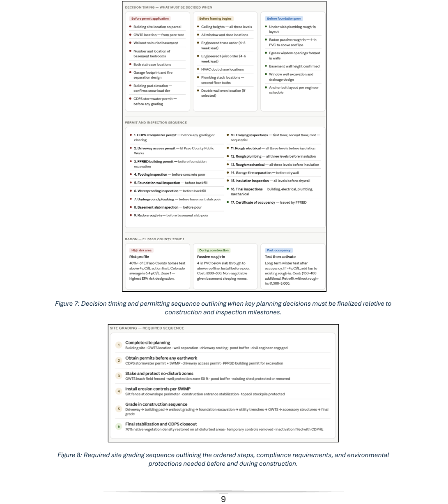

AI Research & Technical Communication
AI-Augmentation Workflow Report
Researched and documented how AI writing and research tools can responsibly augment technical communication workflows, producing an internal report with adoption recommendations, risk analysis, and a practical usage framework.
Responsibilities
AI Tool Review
Reviewed current AI writing and summarization tools to understand productivity value, workflow fit, and risk areas.
Scenario Testing
Tested tools against real technical writing task scenarios using identical inputs and consistent evaluation criteria.
Capability Assessment
Documented capability strengths, accuracy limitations, citation issues, and editing burden across evaluated tools.
Responsible-Use Framework
Developed a practical responsible-use framework for determining when AI tools could support technical communication work.
Adoption Recommendations
Wrote phased adoption recommendations based on task risk, confidentiality, accuracy requirements, and workflow value.
Technical Report
Produced an executive summary, full technical report, risk assessment, comparative analysis, and appendices.

Overview
Evaluating AI tools for responsible technical communication workflows
As AI-assisted writing tools became increasingly available, technical communication teams needed to understand which tools provide genuine productivity value, which introduce accuracy or compliance risk, and how to establish guardrails for responsible adoption.
This report evaluated ChatGPT, Claude, and Microsoft Copilot against defined technical writing task scenarios and produced adoption guidance grounded in documented evidence rather than vendor claims.
Service Value
Helping teams adopt AI tools with evidence, structure, and guardrails
The report helped technical communication teams move beyond informal experimentation by providing a structured evaluation method, documented tool comparisons, and a responsible-use framework for deciding where AI tools could safely support writing and research workflows.
AI tools evaluated: ChatGPT, Claude, and Microsoft Copilot.
Technical writing task scenarios tested across each tool using identical inputs.
Point scoring rubric used to evaluate accuracy, completion, tone, citations, and editing burden.

Problem & Goals
Replacing informal AI experimentation with a structured evaluation framework
Organizations were making AI tool decisions based on marketing materials, individual staff experimentation, or both, with no systematic evaluation framework.
The risk was either over-reliance on tools that hallucinate citations or omit regulatory language, or unnecessary restriction of tools that could reduce revision burden for lower-stakes content tasks.
Accuracy Risk
AI-generated content needed to be evaluated for hallucinations, missing context, incorrect citations, and unsupported claims.
Workflow Value
The report identified which task types could benefit from AI support without creating excessive review burden.
Responsible Adoption
The framework helped teams decide when AI use was appropriate, when human review was required, and when content should not be processed by cloud-based tools.
User Scenario
Identify a Writing Task
A technical communicator needs help drafting, revising, summarizing, or extracting information from source material.
Check Risk Level
The writer reviews whether the content includes confidential data, regulatory language, citations, or high-stakes claims.
Select Appropriate AI Use
The responsible-use framework helps determine whether AI can support the task and what guardrails apply.
Review the Output
The writer checks accuracy, tone, source alignment, citation handling, and whether the output reduces or increases editing burden.
Document and Improve
The team uses findings to refine onboarding, review practices, and future AI tool evaluation cycles.
My Role
Designing the evaluation method and writing the full report
I designed the evaluation methodology, executed all tool testing, documented findings, and wrote the full report, including the executive summary and appendices.
I also facilitated a review session with team leads to validate findings and pressure-test recommendations before final publication.
Technical Writing Lead
Workflow decision-maker
This stakeholder needs a practical way to decide where AI tools can support documentation without reducing quality or compliance.
Goals
- Reduce drafting burden
- Maintain documentation accuracy
- Set clear AI usage guardrails
Technical Communicator
AI-assisted content user
This user needs clear guidance on when AI tools are appropriate, what to check, and how to document responsible use.
Goals
- Use AI tools safely
- Improve writing efficiency
- Avoid hallucinated or unsupported content
Discovery & Constraints
Testing AI tools against realistic technical writing tasks
Evaluation scenarios covered six technical writing task types: first-draft generation from structured notes, plain language revision of regulatory text, FAQ development from source documents, meeting summary generation, procedure step extraction, and citation checking.
Each tool was tested against the same scenario set using identical inputs. Key constraints included rapidly evolving tool capabilities and the absence of an established external evaluation standard for this task domain.
Version Tracking
Tool versions and test timing needed to be documented because AI capabilities change quickly.
Scenario Consistency
Each tool needed to be tested with the same inputs so findings could be compared fairly.
Governance Gap
The project needed to create a practical framework because no established evaluation standard existed for the team’s exact task domain.
Key Features
Cross-Tool Capability Profiles
The report documented per-tool strengths, limitations, accuracy concerns, citation behavior, and task suitability for ChatGPT, Claude, and Microsoft Copilot.
Risk Assessment and Data-Handling Guidance
The risk section addressed hallucination, confidentiality, attribution, privacy, and content types that should not be processed through cloud-based AI tools.
Tiered Adoption Recommendations
The final recommendations outlined phased adoption based on task risk, review burden, productivity value, and required human oversight.

Information Architecture
Structuring the report for both leadership and technical readers
The report was structured as: Executive Summary, Methodology, Per-Tool Capability Profiles, Cross-Tool Comparative Analysis, Risk Assessment, Responsible-Use Framework, Tiered Adoption Recommendations, and Appendices.
The executive summary was written to stand alone for leadership readers who would not review the full technical analysis.
Report Structure
The information architecture helped readers move from high-level recommendations to detailed evidence, scoring, prompts, and outputs when needed.
Requirements & Acceptance Criteria
Creating a scoring rubric and responsible-use criteria
The evaluation rubric scored each tool on accuracy, task completion, tone appropriateness, citation handling, and editing burden reduction using a four-point scale with documented evidence for each score. Responsible-use criteria were adapted for AI-specific risks including fabrication and data privacy.
Project Link
AI-Augmented Workflow report
The linked report includes the executive summary, methodology, comparative tool analysis, risk assessment, responsible-use framework, and phased adoption recommendations.
Analytics, Iteration, Outcomes & Next Steps
Turning evaluation findings into an internal AI usage foundation
The draft report underwent review by a technical writing team lead and a data privacy officer. Their feedback strengthened the risk assessment section and added a data-handling decision tree for determining which content types could be processed through cloud-based AI tools.
The report was adopted as the internal AI usage policy foundation. The tiered adoption framework was incorporated into onboarding documentation, and the responsible-use checklist became part of the content review process.
Run a six-month reassessment cycle to update capability profiles as tools evolve.
Continue refining the data-handling decision tree based on governance and privacy requirements.
Expand onboarding materials with examples of approved and restricted AI-assisted tasks.
Next Steps
Next steps include a six-month reassessment cycle to update tool capability profiles as AI systems evolve and organizational governance needs change.
Future iterations would include stronger examples for approved use cases, expanded privacy decision support, and continued review of citation handling and regulated content risks.
Learnings
This project strengthened my ability to evaluate emerging tools through structured methodology instead of informal experimentation or vendor claims.
I also learned how important risk documentation, privacy guardrails, and human review expectations are when integrating AI into technical communication workflows.